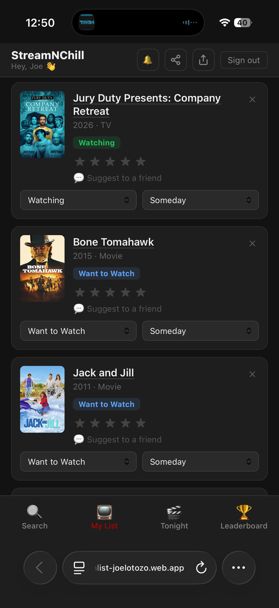
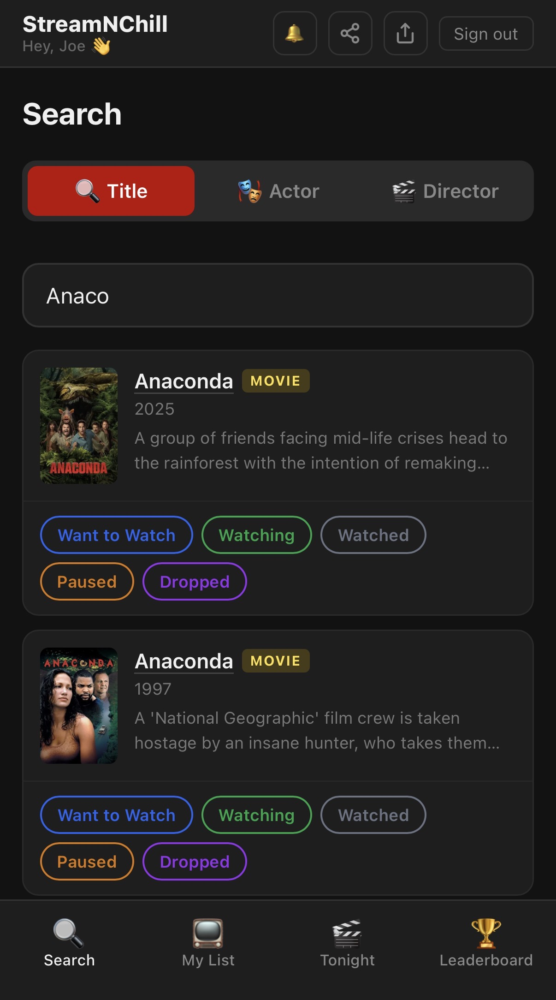
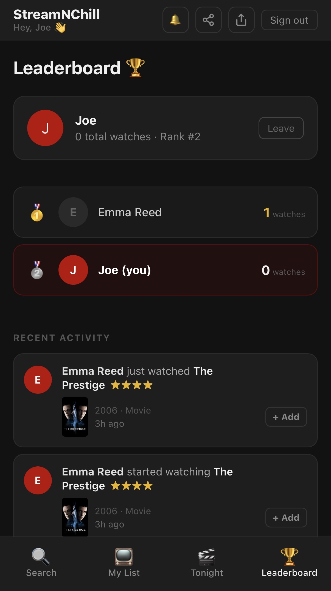
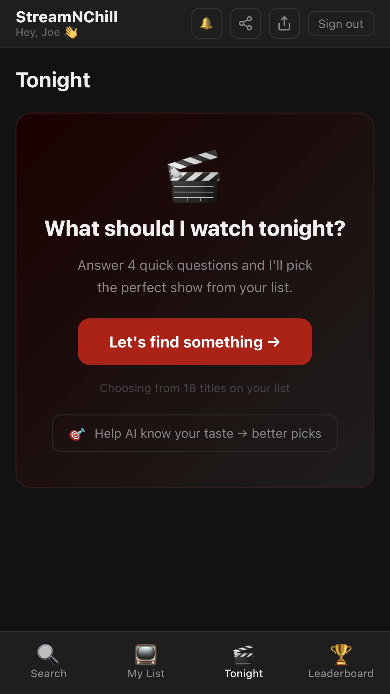
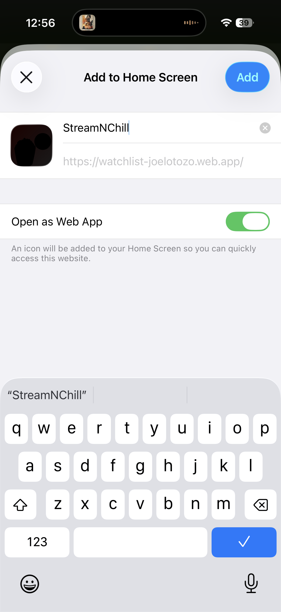

My mom mentioned offhand that she wished there was a better way to keep track of shows and movies — what she wanted to watch, what she was in the middle of, what she'd already finished. She'd heard about apps for that kind of thing but hadn't found one she liked.
I told her I'd see what I could come up with. That night, I opened Claude Code.
By the time I went to bed, the app was live.
I should be honest about something: I wasn't sitting at my desk with a proper setup. I was on my phone. I started the conversation in Claude's chat interface, typing out what I wanted, copying the responses, pasting them back — the old-fashioned way. Not exactly efficient.
At some point during the session, Claude essentially said: let's stop the back-and-forth. Let me just build this.
And it did. It started writing code, connecting pieces, deploying to Firebase, wiring up a real database. I went from describing an idea to having a working web app with user accounts, search, and a live watchlist — in a single evening. That part still feels worth saying out loud, because it's still a little hard to believe even after doing it a few times now.
The app is called StreamNChill. Here's the short version of what it does:
You search for any show or movie — it pulls from a real database of titles with posters, descriptions, and release years. You add things to your list and mark them as Want to Watch, Watching, Watched, Paused, or Dropped. You can search by title, by actor, or by director. Tap on any title and a detail panel slides up with a full description and a link to a YouTube trailer.

My List — track everything in one place

Search by title, actor, or director
There's also a leaderboard — opt-in, so nobody gets added without wanting to be — that shows how many movies the people you know have watched. And a social layer where you can suggest titles to friends and see what they're watching.

Leaderboard — see what your people are watching

Tonight — answer 4 questions, get an AI pick
The part I'm most proud of is called Tonight. You answer four quick questions: What's your mood? How much time do you have? Who's watching? How much attention do you want to pay? Then Claude — the same AI I used to build the app — looks at your actual list and picks something for you.
Not just from your list, either. It also suggests things you haven't added yet, based on what you've already watched and liked. It's the closest thing I've found to asking a friend who actually knows your taste.
"Thrilling. Full movie. Me and my person. I'll pay attention."
Two seconds later, a recommendation with a reason why — pulled from your watchlist and your watch history.
StreamNChill works as a progressive web app, which means you can add it to your iPhone or Android home screen and it runs like a native app — no App Store required.

Add it to your home screen — works like a real app
On iPhone: open the site in Safari, tap the Share button, then "Add to Home Screen." On Android: tap the three dots in Chrome, then "Add to Home Screen."
I want to be clear about what this is and what it isn't. StreamNChill is a personal side project. I'm not running ads, I'm not selling anything, and I'm not doing anything with your data. Your list is yours. An account just means it syncs across your devices — that's it.
I built this for fun, because my mom mentioned a problem she had, and because I wanted to see if I could solve it in a night. The answer was yes. That's still the part that gets me — the idea-to-live-app timeline has collapsed in a way that felt impossible a few years ago.
Try it. Let me know what you think. If there's something that doesn't work or a feature you'd want, I'm genuinely open to hearing it. This is an experiment, not a finished product — but it's a working one.
Try StreamNChill → ← Back to Blog